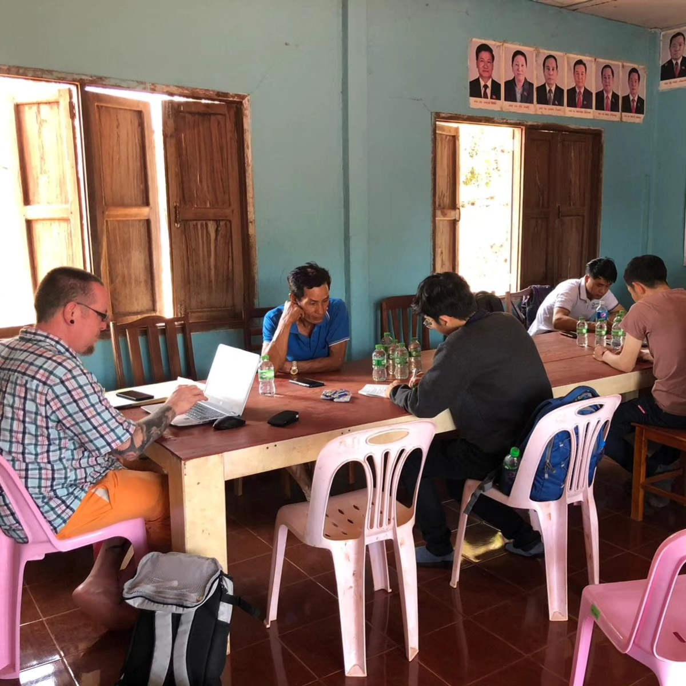
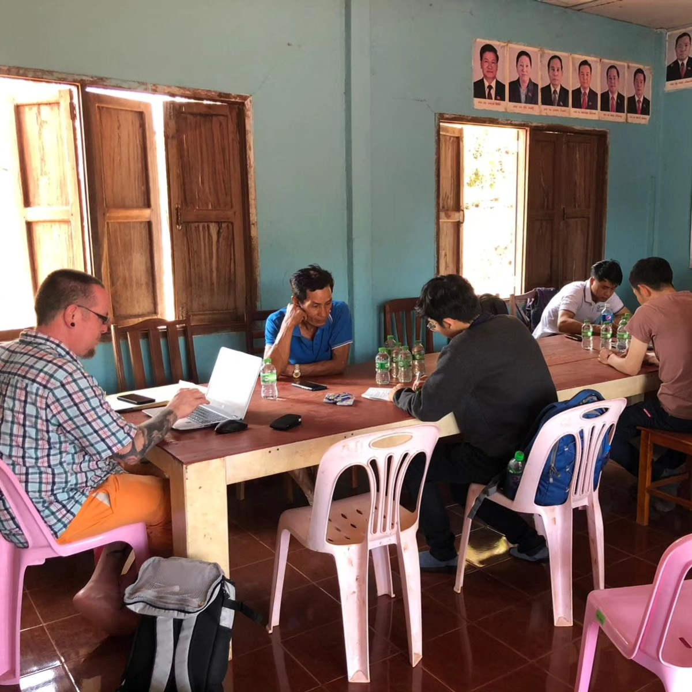
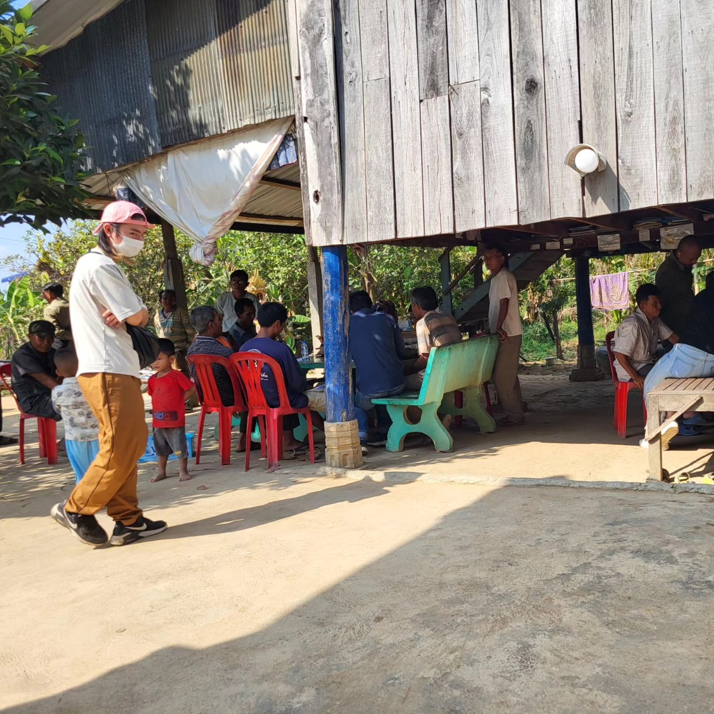
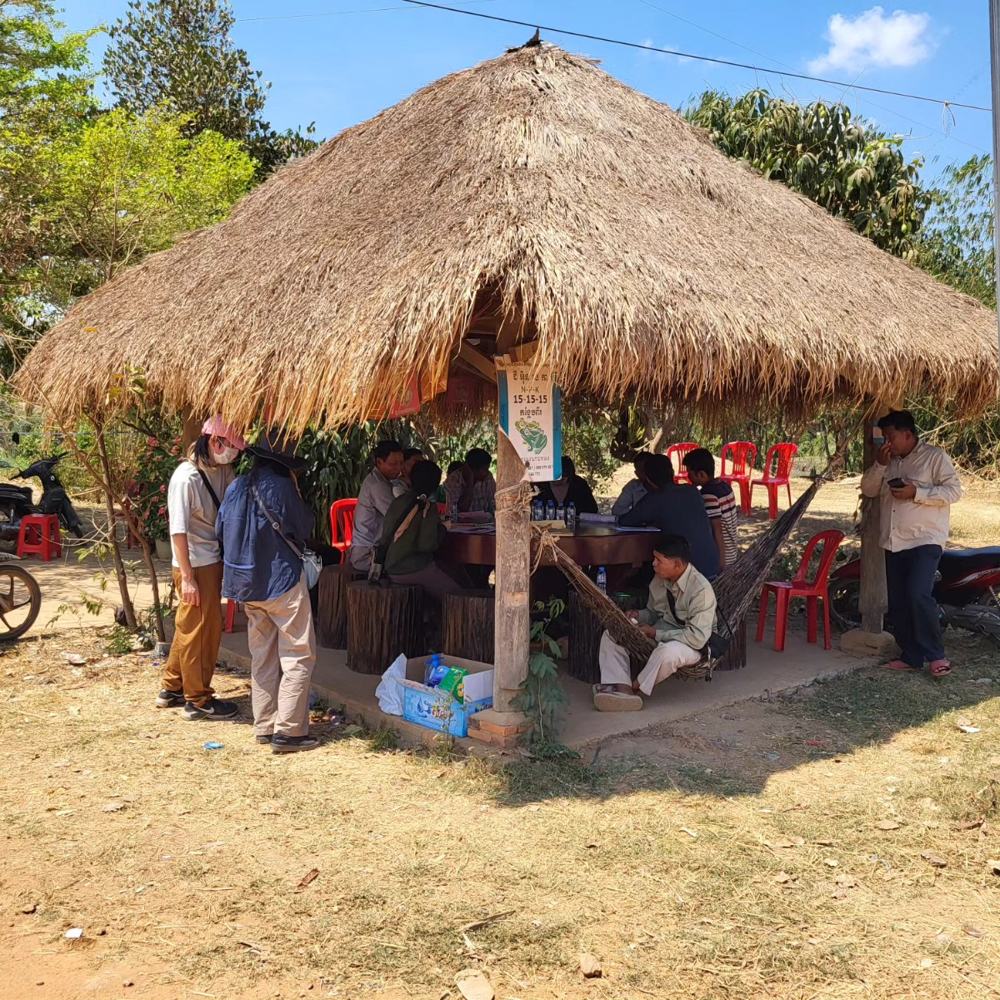
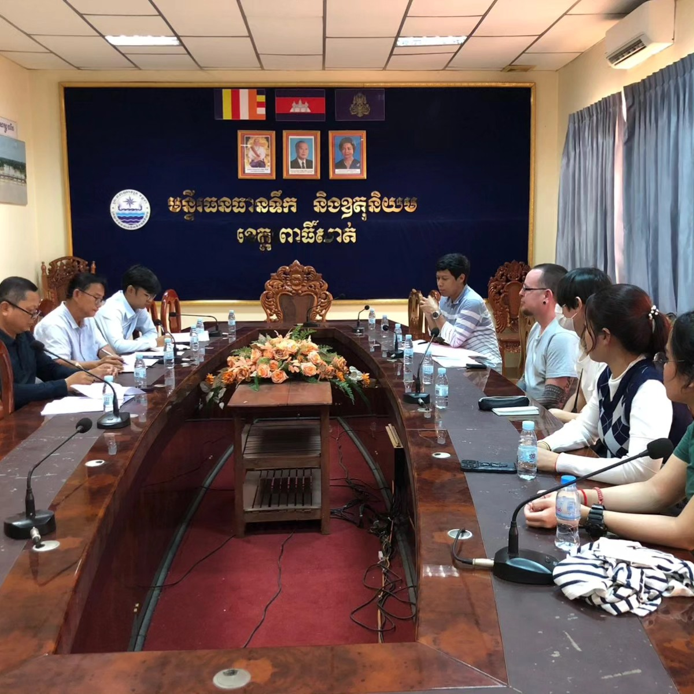
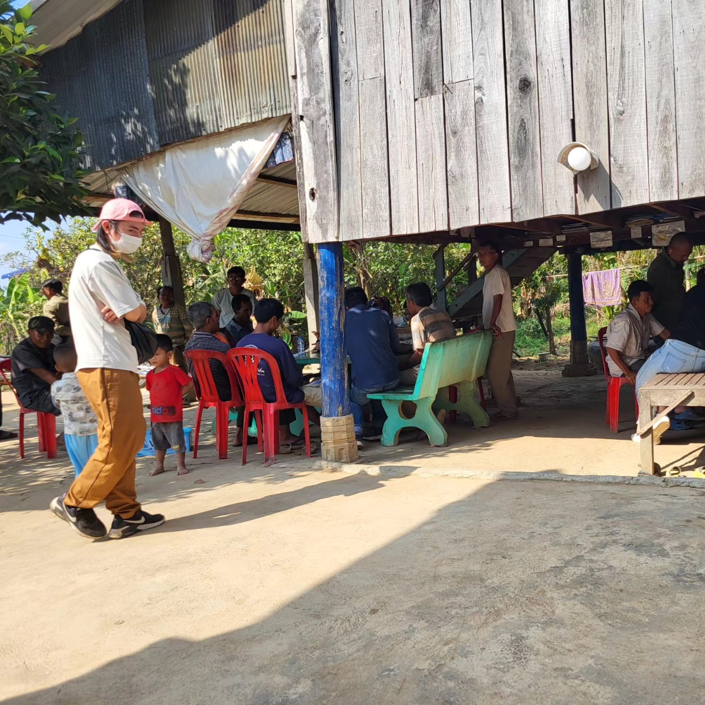
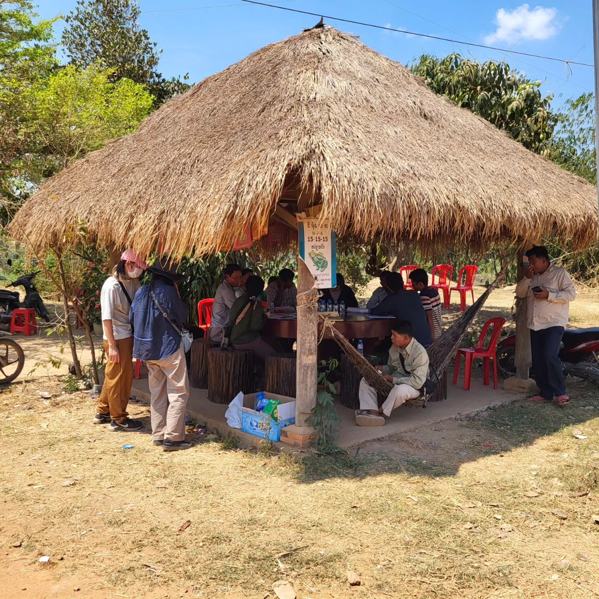
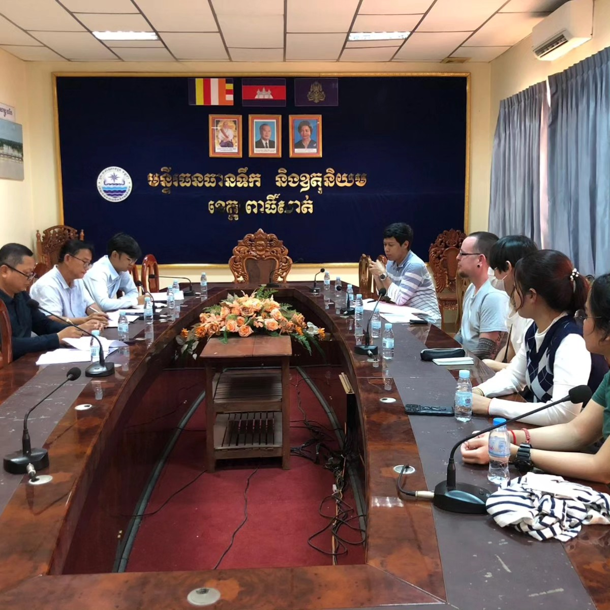

Media
 

 





Project description
In the irrigated rice cultivation sector, developing climate change adaptation measures is an urgent issue. Adapting to unprecedented changes such as intensive rainfall events, prolonged droughts, and the delayed onset of the rainy season is now a challenge for rice producers in Southeast Asia, where rice is cultivated multiple times per year to meet the demands of a growing population. In particular, Cambodia and Laos are in critical need of improvements to their rice production systems due to poor coordination among farmers. Moreover, economic and social factors seem to pressure farmers to sell their paddy fields. Therefore, irrigated rice cultivation needs to be understood from not only water management but also agricultural management in order to improve the resilience and sustainability of their rice production.
This research aims to develop methods for proposing a resilient and sustainable irrigated rice cultivation system by harnessing indigenous knowledge related to water management and strengthening the capacity for agricultural sustainability. This will support the government in developing rice production systems to ensure food security.
In late February, 2024, we traveled to two target villages in Cambodia and Laos to survey farmers on a wide range of topics spanning the three dimensions of sustainability: economic, environmental, and social. We additionally gathered data on the water systems and the rate of water usage during the dry season. Results will be submitted for publication starting in mid-2024.